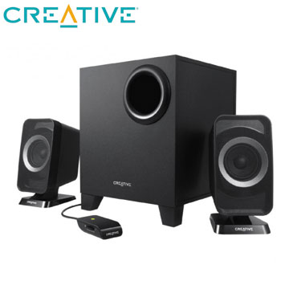

Creative Inspire T3150W |
- 商品預覽
- 產品規格
- 參考資料
|  | Creative Inspire T3150W 2.1聲道藍芽喇叭
◆改善系統的頻率分布，使得音效播放更響亮、中低音更強勁。 本商品資訊取自:Pchome24
|
|---|


產品重量:
環繞喇叭: 319克
低音喇叭: 1.8千克
尺寸（寬 x 高 x 厚）毫米:
環繞喇叭: 75 x 150 x 90
低音喇叭: 184 x 225 x 190
藍牙版本:
藍牙 2.1 + EDR（增強資料速率）
支援的藍牙設定檔:
A2DP（無線立體聲藍牙）
支援的Codec:SBC
藍牙裝置的作業範圍:
最大10米（此處為開放空間測量結果。牆壁和建築物可能會影響裝置的使用範圍。）
立體聲類比插孔:立體聲輸入（3.5 毫米）
喇叭功率：
每聲道（共2個聲道）額定功率2瓦
低音喇叭的額定功率為5瓦
頻率響應：40Hz~20kHz
訊噪比：>75dB